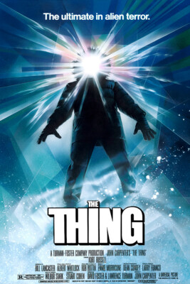
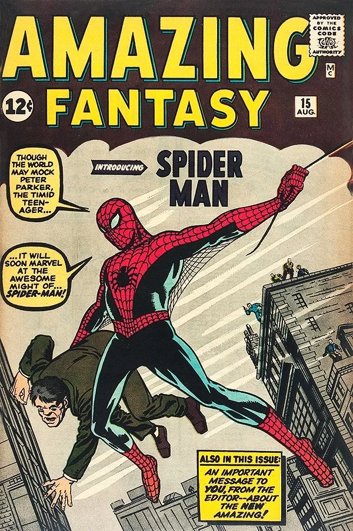
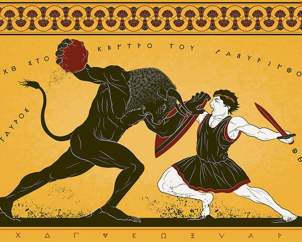
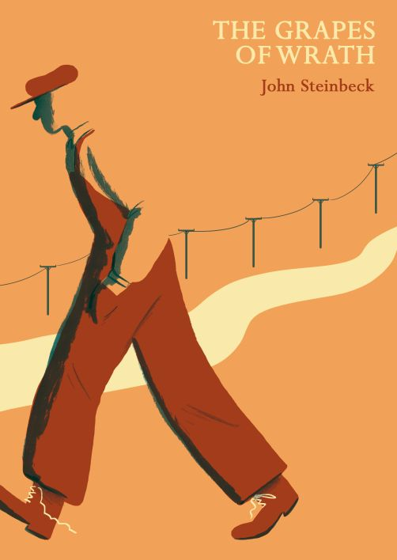

MusicianI have been playing and recording all kinds of music (jazz,classical,metal,folk) for 9 years.Game loverI love to play games time to time, lots of gems out there.

MoviesI would consider myself a cinephile, I am over 400 movies at letterbox.

ComicsReading comics since I was a child, one hobby that I will never let go.

MythologyI have been fascinated by ancient mythology and iconography since childhood, and my interest has only grown stronger over the years.

BooksI love books and I am trying to read as much as I can. Again since I am a child I have gained this habit and my mind is profitting from it.